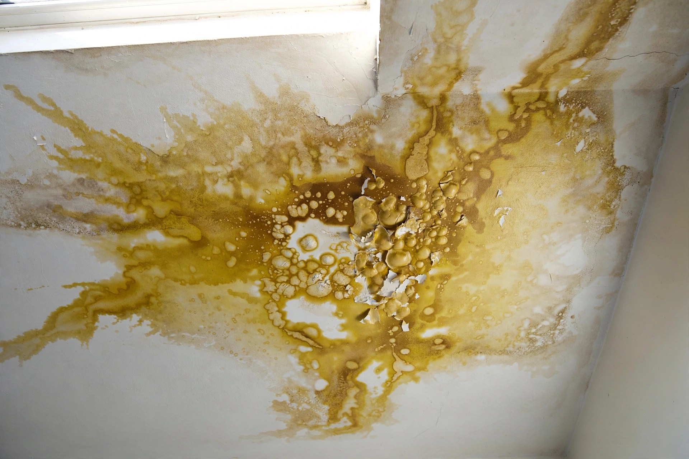
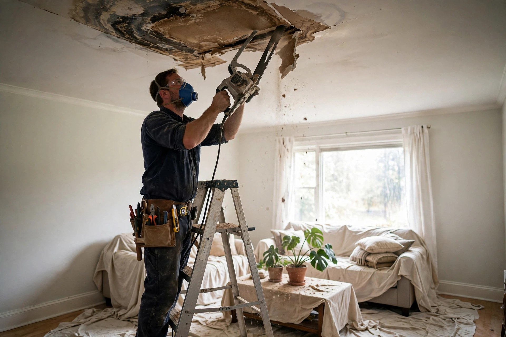

Ceiling Leak Repair in Nampa, ID
A ceiling stain is a message from above — roof, plumbing, or condensation. We read it, find the source, and repair the damage properly.


Is your ceiling leak still active?
Any one of these means water is still arriving. The longer it runs, the more the repair costs.
Growing stain
Stain is growing or darkening over days.
Bubbling paint
Paint is bubbling or peeling around the spot.
Cool or damp
The area feels cool or damp to the touch.
Dripping sounds
You hear dripping during rain or plumbing use.
Sagging drywall
The drywall sags or feels soft when pressed.
The pencil test
Mark the stain’s edge lightly with a pencil and check it in a week. If discoloration has crept past the line, the leak is active. Take a dated photo of the marked stain too — it helps assess the timeline at a glance.
Three places ceiling leaks begin
Roof failures
Worn shingles, failed flashing, or ice dams let rain travel along rafters and drip far from the actual breach.
Plumbing above
Upstairs bathrooms are the top indoor culprit — supply lines, drain seals, and shower pans all leak downward.
Condensation
Poor attic ventilation lets moisture condense on cold surfaces and drip onto ceiling drywall below.
A Nampa homeowner spots a yellow stain spreading on the living room ceiling. The upstairs bathroom’s shower drain seal has been seeping for weeks. The damaged section is cut out, the seal is replaced, and the ceiling is patched and textured to match.
Older infrastructure, older pipes
Nampa maintains more than 530 miles of drains and laterals. In older neighborhoods, the private laterals connecting homes to that system are aging too — backups and slow drains stress upstairs plumbing.
Common questions, straight answers
My ceiling has a stain but it’s dry now. Does it still need repair?
Yes. A dry stain means the leak paused, not that it’s fixed. The next rain or plumbing use can restart it — and the drywall may already be weakened.
Can you find where the leak is coming from?
That’s the first step. Moisture meters and a look above the ceiling trace the water back to roofing, plumbing, or condensation.
Will the whole ceiling need to come down?
Rarely. Usually only the damaged section is cut out. If the leak ran for months, a larger area may need attention.
How do you match the ceiling texture?
After new drywall goes up, the texture is matched to the surrounding ceiling — orange peel, knockdown, or smooth — then painted.
Nampa has 530+ miles of drains — does that affect my ceiling?
Indirectly. Aging municipal and lateral lines can back up during heavy use, raising humidity and pressure in older plumbing that feeds upstairs bathrooms.
From stain to solid
Trace the leak
Moisture mapping finds the entry point. Repairing drywall without fixing the source guarantees a repeat.
Open and assess
Damaged drywall is cut back to solid material. Insulation above is checked — wet insulation gets replaced.
Dry the cavity
The ceiling cavity dries fully before new board goes up. Trapped moisture means future mold.
Finish to match
New drywall, matched texture, and paint. The repair disappears into the surrounding ceiling.

Stain on the ceiling?
Don’t wait for the drip. Call and we’ll trace it to the source before it gets worse.